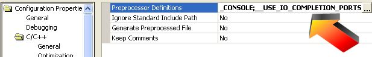

IO completion ports overview
IO Completion ports require Windows NT 3.5, 2000, or XP!
IO Completion ports is a method Windows uses to notify and awaken a thread when asynchronous IO is complete. This is more efficient than creating one thread per IO operation and having that thread wait for the operation to complete. Instead, a pool of threads is created (in this case two threads per processor). These pool of threads block on the IO completion port and when an IO operation is complete one thread wakes up and performs another operation. This will benefit servers with hundreds to thousands of players. It does not benefit games with only a few players and in fact may be slower due to Windows overhead.
RakNet pools the IO completion port worker threads. Therefore, multiple instances of servers and clients on one computer will all share the worker threads. This improves efficiency in cases such as running multiple servers on one machine, or a client and a server on the same machine.
Enabling IO completion ports
To enable IO completion ports, declare the preprocessor define __USE_IO_COMPLETION_PORTS and rebuild all. To not enable IO completion ports, simply do not define this. Note that the included pre-build DLLs do not use IO completion ports to ensure Windows compatibility. You can however easily build your own by loading the sample project found at \Samples\Project Samples\CreateDLLSampleProject , defining __USE_IO_COMPLETION_PORTS, and building.

|
|
Defining __USE_IO_COMPLETION_PORTS in .net 2003 |
|

{kind=link}